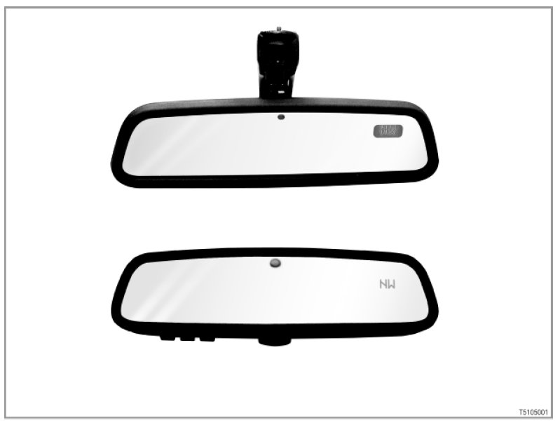

Mirrors: Description and Operation
51 01 05 (122) Interior mirror with digital compass

Introduction
A digital compass is offered as optional equipment (SA 4NA) in the inside mirror.
up to 09/2006
A small liquid crystal display at the top right in the inside mirror displays in which direction of travel the vehicle is pointing: e.g. SW for South West.
from 09/2006
The display is realised with transparent light technology. An liquid crystal display (window) is no longer needed. The display can be deactivated.
The compass offers an additional benefit especially in the USA. In large cities the streets are frequently arranged according to the points of the compass. The signposts are also specified with points of the compass. However, the compass also assists orientation in large European cities on the basis of the points of the compass. [System overview ...]
E88, E93 from 09/2008
The digital compass must be calibrated once with the soft top or hardtop closed and once with the soft top or hardtop open. The position of the soft top or retractable hardtop has an effect on the magnetic field in the vehicle. A deflected magnetic field will lead to calibration errors.
Brief component description
The following components deliver signals for the digital compass:
- Magnetic field sensor
up to 09/2006
The magnetic field sensor is installed in the mirror base. The magnetic field sensor measures the current alignment of the magnetic field. The signal is sent to the control electronics for the compass in the inside mirror.
from 09/2006
The magnetic field sensor is on the PCB in the inside mirror.
[more ...]
- Control electronics for the compass
The inside mirror is electrically connected to the roof function centre (FZD).
The control electronics for the compass are integrated into the printed circuit board for the inside mirror. The signals from the magnetic field sensor are received by the control electronics. The liquid crystal display is activated directly by the control electronics.
The following components are controlled:
- Display in inside mirror
up to 09/2006
The liquid crystal display (window) is situated at top right in the inside mirror.
The points of the compass are presented digitally on the liquid crystal display (LCD: Liquid Crystal Display). The display is divided into eight compass points.
from 09/2006
The point of the compass is displayed in transparent light technology in the inside mirror as well. The display is also at the top right in the inside mirror. The display is divided into eight compass points.
System functions
The following system functions for the digital compass are described:
- Display
- Brightness control of display
- Adjustment of magnetic field zones and calibration
- from 09/2006: Further adjustments
- up to 09/2006: Fault display
Display
The 8 points of the compass are digitally displayed by abbreviations.
from 09/06
The display is available in English and German (delivery status: English LHD)
Die Anzeige ist in englisch und deutsch
N: North
NE: North East (German: NO)
E: East (German: O)
SE: South East (German: SO)
S: South
SW: South West.
W: West
NW: North West
The changeover between displays is carried out as follows:
- The current vehicle position is the centre of a 360° circle.
- The eight points of the compass divide these 360 into sixteen 22.5 segments.
- The display changes over if the direction of travel changes by more than 22.5°.
Brightness control of display
2 photodiodes in the electrochromic interior mirror record the surrounding brightness (1 photodiode for the surrounding brightness coming from the front, 1 photodiode for the surrounding brightness coming from the rear).
The photodiodes deliver the signals for the display brightness control.
The brightness of the display is adjusted by the interior mirror control electronics to suit the surrounding brightness.
E88, E93
A darkened inside mirror will become lighter while the soft top or the retractable hardtop is opening and closing.
The roof function centre (FZD) transmits the signal (roof open or closed) to the control electronics for the inside mirror. The signal is transmitted on the line that is also used for transmitting the signal for driving in reverse.
Adjustment of magnetic field zones and calibration
The worldwide magnetic field zones are permanently stored in the inside mirror. The magnetic field zones represent the deviations in relation to an ideal magnetic field for earth. The orientation "North" is precisely determined by the magnetic field zones.
The current magnetic field zone may be adjusted according to the geographic location. For example, Germany is located in magnetic field zone "8".
A vehicle has its own magnetic field. This makes it possible for the magnetic field sensor to measure an overlapping of the magnetic field with the Earth's magnetic field. This overlapping is "worked out" by calibrating the compass.
A changed magnetic field is normally calibrated "automatically".
The vehicle's magnetic field may change under the following special circumstances:
- Powerful vibration during an accident
- Very large external magnetic field - e.g. if a vehicle passes under a train when travelling through an underpass
However, a manual calibration may speed up the automatic calibration.
For procedure to be followed when setting the magnetic field zones as well as manual calibration: see notes for service staff. from 09/2006: Further adjustments
Different time-based adjustment menus can be obtained by means of the control button:
- 0 to 3 seconds: Display ON/OFF
- 3 to 6 seconds: Adjustment of the magnetic field zones (0 -15)
- 6 to 9 seconds: Calibration (C)
- 9 to 12 seconds: Left-hand drive or right-hand drive (L or R)
- 12 to 15 seconds: English or German (E or O)
Release the control button when the correct menu is obtained. Select values in the menu by pressing briefly. After approx. 5 seconds the value is stored and the menu is automatically exited.
up to 09/2006: Fault display
The LC matrix for the liquid crystal display lights up completely if a system fault develops. A fault is displayed under the following conditions:
- If the vehicle is highly magnetised (2200-2500 milligauss), the measuring range of the magnetic field sensor will be exceeded.
- If a fault develops in the circuitry of the magnetic field sensor.
NOTE: Physical unit Gauss!
Gauss is the unit of measurement for magnetic flux density.
Switch-on conditions
At terminal 15 ON, the display is activated with a test run.
- up to 09/2006
The LC matrix lights up completely (approx. 3 seconds). The digital compass is then switched on. There is no switch to deactivate the liquid crystal display if terminal 15 is ON.
Notes for Service department
The following information is available for service staff:
- General information: [more ...]
- Diagnosis: ---
- Encoding/programming: ---
We can assume no liability for printing errors or inaccuracies in this document and reserve the right to introduce technical modifications at any time.